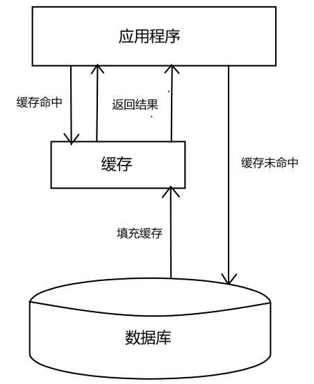
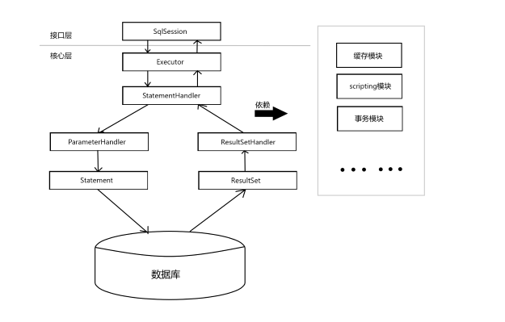

原文连接:https://www.cnblogs.com/lee0527/p/11896460.html
Mybatis技术内幕(一)——整体架构概览
Mybatis的整体架构分为三层，分别是基础支持层、核心处理层和接口层。
如图所示：
——整体架构概览0.png)
一、基础支持层
基础支持层包含整个Mybatis的基础模块，这些模块为核心处理层的功能提供了良好的支撑。下面简单描述各个模块的功能。
反射模块
Mybatis中专门提供了反射模块，该模块对Java原生的反射进行了良好的封装，提供了更加简洁易用的API，方便上层使用，并且对反射操作进行了一系列优化，例如缓存了类的元数据，提高了反射操作的性能。
类型转换模块
为简化配置文件提供了别名机制，该机制是类型转换模块的主要功能之一。类型转换模块的另一个功能是实现 JDBC 类型与 Java 类型之间的转换，该功能在为 SQL 语句绑定实参以及映射查询结果集时都会涉及。在为SQL语句绑定实参时，会将数据由 Java 类型转换 JDBC 类型；而在映射结果集时，会将数据由 JDBC 类型转换成 Java 类型。
日志模块
MyBatis 作为一个设计优良的框架，除了提供详细的日志输出信息，还要能够集成多种日志框架，其日志模块的一个主要功能就是集成第三方日志框架。
资源加载模块
资源加载模块主要是对类加载器进行封装，确定类加载器的使用顺序，并提供了加载类文件以及其他资源文件的功能。
解析器模块
解析器模块的主要提供了两个功能：一个功能是对 XPath 进行封装，为 MyBatis 初始化时解析 mybatis-config.xml 配置文件以及映射配置文件提供支持；另一个功能是为处理动态 SQL 语句中的占位符提供支持。
数据源模块
MyBatis 自身提供了相应的数据源实现，当然 MyBatis 也提供了与第三方数据源集成的接口，这些功能都位于数据源模块之中。
事务管理
MyBatis 对数据库中的事务进行了抽象，其自身提供了相应的事务接口和简单实现。但在大多数场景当中，Mybatis 会与 Spring 框架集成，并由 Spring 框架来管理事务。
缓存模块
My Batis 中提供了一级缓存和二级缓存，而这两级缓存都是依赖于基础支持层中的缓模块实现的。这里需要注意的是， MyBatis 中自带的这两级缓存与 MyBatis 以及整个应用是运行在同一个 JVM 中的，共享同一块堆内存。如果这两级缓存中的数据量较大， 则可能影响系统中其他功能的运行，所以当需要缓存大量数据时 ，优先考虑使用 Redis、 Memcache 等缓存产品。

Binding模块
Binging模块可以在编译器帮助我们检查在映射文件中定义的SQL节点是否有出现错误
注意：开发人员无须编写自定义 Mapper 接口的实现， MyBatis 会自动为其创建动态代理对象。在有些场景中，自定义 Mapper 接口可以完全代替映射配置文件，但有的映射规则和 SQL 语句的定义还是写在映射配置文件中比较方便，例如动态 SQL语句的定义。
二、核心处理层
在核心处理层中实现了Mybatis的核心处理流程，其中包括Mybatis的初始化以及完成依次数据库操作所涉及的全部流程。
配置解析
在 MyBatis 初始化过程中，会加载 mybatis-config.xml 配置文件、映射配置文件以及Mapper 接口中的注解信息，解析后的配置信息会形成相应的对象并保存到 Configuration 对象中。之后，利用该 configuration 对象创建 SqlSessionFactory 对象。待 MyBatis 初始化之后，开发人员可以通过初始化得到 SqlSessionFactory 创建 SqlSession 对象并完成数据库操作。
SQL解析与scripting模块
MyBatis 实现动态 SQL 语句的功能，提供了多种动态 SQL 语句对应的节点，例如，＜where＞节点、＜if>节点、＜foreach＞节点等。通过这些节点的组合使用， 开发人员可以写出几乎满足所有需求的动态SQL语句。
MyBatis 中的 scripting 模块会根据用户传入的实参，解析映射文件中定义的动态 SQL 节点，并形成数据库可执行的 SQL 语句 。之后会处理 SQL 语句中的占位符，绑定用户传入的实参。SQL执行
SQL 语句的执行涉及多个组件 ，其中比较重要的是 Executor、StatementHandler、ParameterHandler 和ResultSetHandler。Executor 主要负责维护一级缓存和二级缓存，并提供事务管理的相关操作 ，它会将数据库相关操作委托给 StatementHandler 完成。StatementHandler 首先通过 ParameterHandler 完成 SQL 语句的实参绑定，然后通过java.sql.Statement 象执行 SQL 语句并得到结果集，最后通过 ResultSetHandler 完成结果集的映射，得到结果对象并返回 。下图展示了 MyBatis 执行 SQL 语句的大致过程。

插件
Mybatis 自身的功能虽然强大，但是并不能完美切合所有的应用场景，因此 MyBatis提供了插件接口，我们可以通过添加用户自定义插件的方式对 MyBatis 进行扩展。用户自定义插件也可以改变 Mybatis 默认行为，例如，我们可以拦截 SQL 语句并对其进行重写。由于用户自定义插件会影响 MyBatis 核心行为，在使用自定义插件之前，开发人员需要了解 MyBatis内部的原理，这样才能编写出安全、高效的插件。
三、接口层
接口层的核心是 SqlSession 接口，该接口中定义了 MyBatis 暴露给应用程序调用的 API ，也就是上层应用与 MyBatis 交互的桥梁。接口层在接收到调用请求时，会调用核心处理层的相应模块来完成具体的数据库操作。
总结
这篇文章简单介绍了Mybatis的整体架构，并简单介绍了 MyBatis 基础支持层、核心处理层以及接口层中的主要
模块的功能。